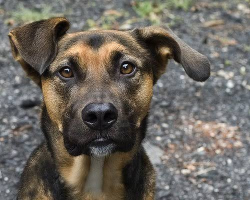
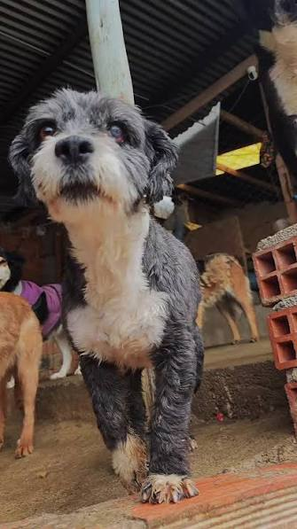
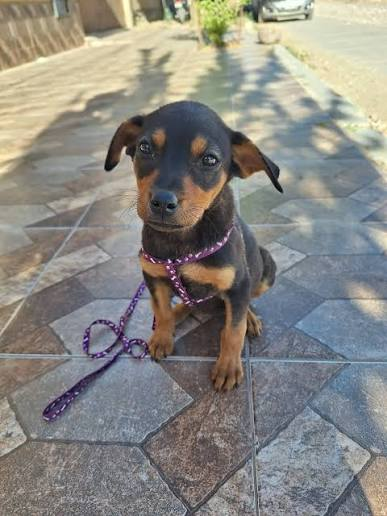

Regla 3-3-3
La denominada regla 3-3-3 divide el proceso de adaptación de un perro adoptado en tres etapas aproximadas: los primeros tres días, las primeras tres semanas y los primeros tres meses de convivencia.
Adoptar salva vidas
Choco
Edad: 3 años ±
Género: Macho
Fecha de rescate: 09-10-26

Pimienta
Edad: 1 años ±
Género: Hembra
Fecha de rescate: 29-09-26

Dugui
Edad:9 años ±
Género:Macho
Fecha de rescate: 29-09-26

Nombre: Laika
Edad: 4 meses
Género:Hembra
Fecha de rescate: 28-10-26
La denominada regla 3-3-3 divide el proceso de adaptación de un perro adoptado en tres etapas aproximadas: los primeros tres días, las primeras tres semanas y los primeros tres meses de convivencia.
Se realiza la solicitud para un o varios perros de su interés, se recibirán en el refugio los documentos requeridos, y los rescatistas considerarán la información provista por usted. Si todo se aprueba adecuadamente se le hará la entrega de la mascota a su domicilio.
Se cuentan con albergues para cantidades grandes de mascotas como ser el albergue angelino, zoonosis, Alma pro patitas, Animal Rights Oruro. Se tiene además hogares temporales que llegan a alberguergar mascotas por un periodo de tiempo limitado y en menor cantidad
Llena este formulario y te mandaremos una lista de mascotas más adecuadas para tí